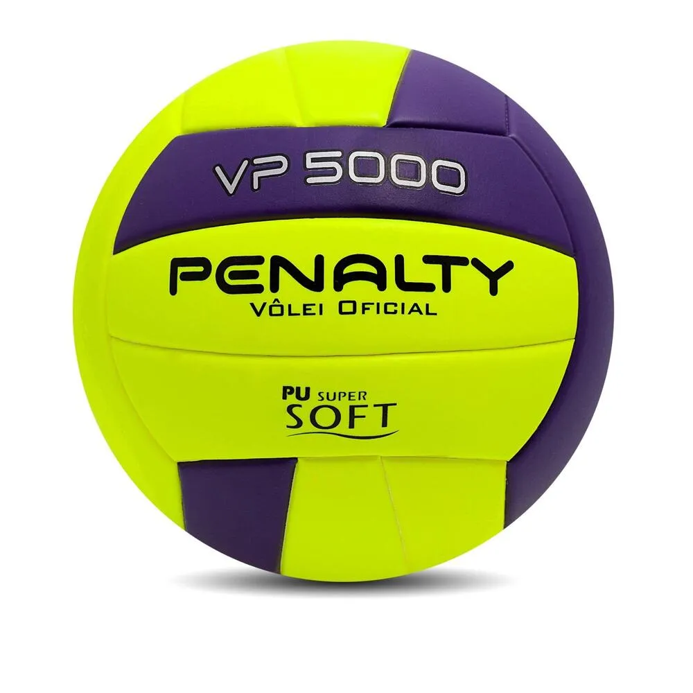

MAGIC SHOP
Menu
- Pagina Do Basquete

- Pagina Do Handebol

- Pagina Do Vôlei

Conheça a nossa loja fisicamente!


Bem-vindo à MAGIC SHOP
- o seu destino definitivo
para tudo que é
necessário para viver
a paixão pelos esportes!
Nossa loja é um paraíso
para entusiastas de atividades
físicas e atletas de
todos os níveis.
Com uma ampla variedade
de produtos e equipamentos
de alta qualidade,
atendemos desde os iniciantes
os profissionais.
Ao entrar em nossa loja,
você é imediatamente acolhido
por um ambiente vibrante e energético,
com áreas cuidadosamente organizadas para
diferentes modalidades esportivas.
Navegue por nossos corredores
repletos de tênis de corrida,
acessórios para uniformes e muito mais.
Oferecemos roupas esportivas de marcas renomadas,
que garantem conforto e estilo tanto
para o treino quanto para o dia a dia.
Nossa equipe de especialistas está sempre à
disposição para oferecer conselhos personalizados,
garantindo que você encontre o
equipamento ideal para suas necessidades.
Além disso, organizamos
eventos e workshops regularmente,
trazendo treinadores e atletas renomados
para compartilhar suas dicas e experiências.
Na MAGIC SHOP, a paixão pelo esporte
é o que nos move,
e nossa missão é fornecer
tudo que você precisa
para alcançar suas metas
e se manter motivado.
Venha nos visitar e
descubra como podemos
ajudar a elevar seu desempenho e
transformar sua experiência esportiva!
Nosso endereço;
Formas De Pagamentos;
- Pix
- Cartão de Crédito/Débito
- Dinheiro Físico
PROPRIEÀRIOS;
- Lara Emanuelly Rodrigues Almeida
- Leonardo Amorin